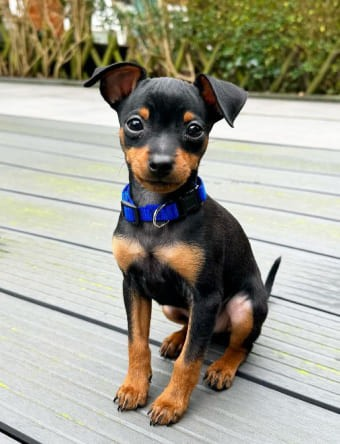
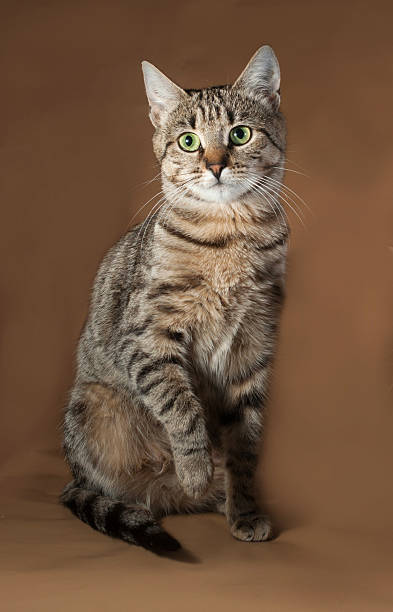

Ella es Milky, y aunque parece inofenciva podría atacar a un tiburón.
No se cansa de ladrar y todos los perros de la cuadra le tienen miedo.

El es Dog, su nombre no lo elegí yo. De haber sido así
ubiese elegido un nombre con cariño, no una traducción de perro en inglés.

Ella es pimienta. No hay mucho que decir, un día llegó a nuestra casa
y más nunca se fue, ya es parte de la familia.

Esa es una de las mascotas mas queridas, no es muy activa, y le gusta mucho la lechuga.

El es Andy, vive en el jardin de la abuela, le gusta mucho comer mangos.

Su nombre es Athom, llegó hace poco a la familia. Siempre tiene hambre y le gusta mucho jugar.